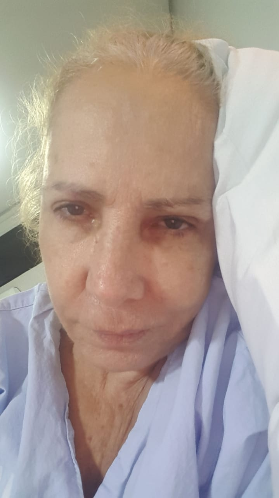
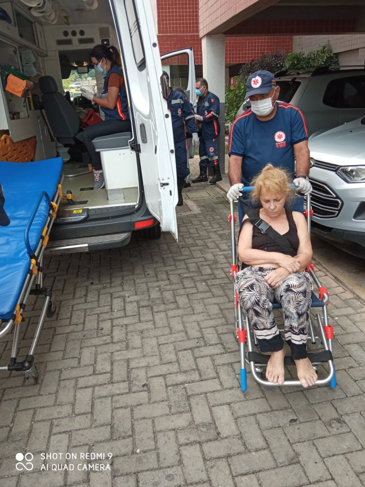
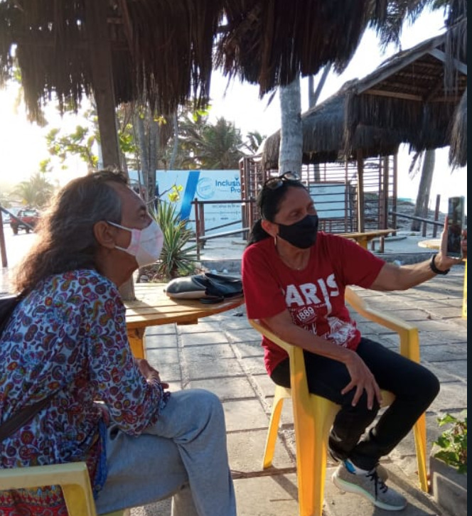
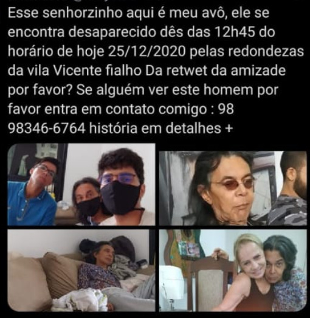
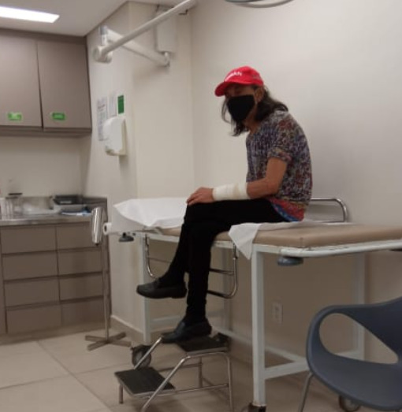
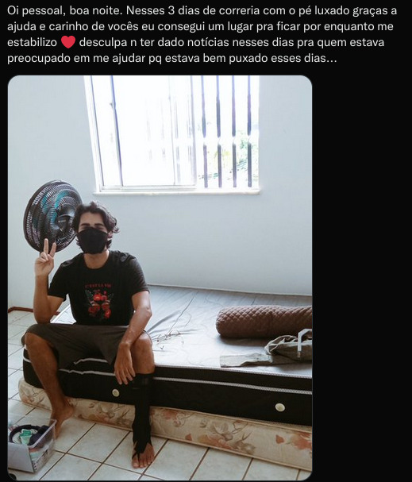

Olá, seja bem-vindo.
Quem sou?
Avô
A minha expulsão de casa é uma história complicada... É necessário entender a vida dos meus avós para depois entrar na minha história.
...TUDO COMEÇOU NA PONTA DO DEDO
Meu avô sofreu um acidente em Brasília, estávamos andando pelo estacionamento do shopping quando de repente uma moça não viu meu avô atravessando e atropelou o dedão do pé dele. O acidente foi o suficiente pro meu avô ter uma obstrução de alguma das artérias e ter ocasionado um pequeno AVC pois ele já tinha problemas com pressão alta.
Depois dessa situação, meu avô que sempre trabalhou com carros, pois era mecânico, tinha como uma das opções de negócios dele a troca e revenda de carros, infelizmente, depois do acidente ele já não era mais o mesmo.
Voltamos para São Luís - MA, e meu avô voltou a fazer os negócios dele com os vários carros que ele mensalmente trocava. Com passar de 6 anos... na época estava focado estudando para passar no Vestibular de medicina na USP ou aqui mesmo na federal do Maranhão, mas depois de perceber que todo dia meu avô estava com um carro diferente e insatisfeito com os carros eu percebi que meu avô estava fazendo trocas impulsivamente, eram trocas do tipo : comprar uma Hylux no valor de 150 mil a 200mil e revender ela muito abaixo do valor, como 50mil 60mil. Logo me alertei, sempre vivi com eles desde o meu nascimento mas ver tal situação me fez pensar em intervir nas negociações de alguma maneira, então tentei avisar aos filhos deles e parentes próximos.
No entanto, nem um dos familiares haviam levado a sério ou se preocuparam com isso, então entendi que estava sendo ignorado e ninguém dava importância para as negociações ruins que meu avô tinha feito. Meu avô persistiu fazendo as trocas que não faziam sentido, cheguei a conhecer a pessoa que estava comprando e vendendo pra ele, descobri que essa mesma pessoa que vendia os carros comprava os carros dele de volta só que por valores abaixo do que foi vendido inicialmente, ele percebeu que meu avô não estava "são" ou "ciente" do que estava fazendo e aproveitou-se do momento. Eu muito jovem, não sabia como resolver a situação, por diversas vezes tentei cancelar e me intrometer nas negociações, mas meu avô sempre dava um jeito de sair escondido e voltar a dar dinheiro para desconhecidos. Tentei cancelar uma negociação de um imóvel que ele estava vendendo por preço de banana, mas ele ameaçou chamar a polícia gritando em voz alta no meio do cartório em minha direção, me chamando de louco e que não me conhecia, a moça a qual estava comprando o imóvel dele estava apenas sorrindo com a oportunidade e a cena que meu avô havia feito no cartório. Seja por carros, ou comprando celulares ele sempre revendia abaixo do valor. Infelizmente, depois dessa situação, e de que minha avó que já não tinha controle sobre ele pois era vítima dos abusos do meu avô e portanto também não sabia como o intervir, o mais triste aconteceu : todo o patrimônio construído de mais ou menos 30 anos que eles dois fizeram foi a 0.
Avó
Minha avó sempre foi uma pessoa com uma vida difícil, perdeu os pais muito cedo, e conheceu meu avô que no começo da relação sempre é algo bom, mas com o passar do tempo as coisas começaram a ficar ruins
...Uma guerreira
Casos de estupro, colocar minha avó em situações que ela não permitia... Meu avô deixou minha avó cuidando de 2 filhos totalmente sozinha, até que ele voltou pra ela mas depois de muito tempo. Minha avó sempre teve que aguentar muita barra, cuidar dos filhos e ter perdido os pais na adolescência muito cedo foram choques que desencadearam nela o vício no cigarro, depressão, síndrome do pânico entre outros problemas psicológicos. Por diversas vezes minha avó cometeu tentativas de suicido, seja por cortes ou tomando remédio, mas felizmente nem um dos atos tiveram sucesso.
Por diversas vezes minha avó cometeu tentativas de suicido, seja por cortes ou tomando remédio, mas felizmente nem um dos atos tiveram sucesso. 
Por ter sofrido diversos abusos psicológicos, ameaças e violências por parte do meu avô, ao decorrer da vida, ela 'aprendeu' a nunca se opor a ele. Mesmo que hoje ele seja apenas um idoso emagrecido e que não consegue nem mesmo tomar um banho sem sujar e molhar todo o banheiro.
Depois do meu avô estar quase zerando as economias construídas com minha avó, vovó se viu na obrigação de trabalhar como costureira, trabalhando com muitas demandas,(o que infelizmente ela n poderia pois a recomendação do médico era de ficar longe de sujeiras/poeiras pois ela tinha comprometido parte do pulmão dela e desenvolvido DPOC [ doença pulmonar obstrutiva crônica] por conta do fumo de cigarros, além de outros problemas de saúde) , ela sempre estava atrás de oportunidades. Trabalhando como costureira no Grand Park e recebendo suas aposentadorias, ela sustentava a casa, eu trabalhando de Uber e estudando pro Enem/vest da USP e meu avô comprando e revendendo carros/relógios/celulares mais baratos do que o preço comprado.
Na época de pandemia, eu estava tentando cuidar ao máximo dos meus avós , evitando sair, ficando em isolamento, indo sozinho aos mercados e higienizando as compras para não infectar meus avós. Seguindo os protocolos de isolamento, tive que parar de trabalhar de Uber e focar apenas nos estudos, então vovó sozinha com o trabalho de costureira teve que sustentar a casa enquanto vovô continuava perdendo dinheiro.
A oportunidade que mudou a trajetória de tudo
Enquanto estudava, certo dia meu pai - que é filho deles dois - chegou em casa e ofereceu uma oportunidade a vovó de trabalhar com ele e receber em torno de 7mil reais mensais (parecia bom de mais para ser verdade). Vovó ficou super animada, para ela essa era a solução pra vida dela, uma oportunidade de ouro, só falava disso a semana toda. Então, quando o dia combinado de ir ao trabalho finalmente chegou, meu avô obrigou minha avó a levar ele junto. Meu pai que já não gostava do meu avô (que por sinal é seu pai), não aceitou que ele fosse e disse que era pra esquecer o trabalho, que não iria mais dar a oportunidade. Acordei de manhã cedo com gritarias em casa e minha avó chorando aos prantos. Perguntei a ela o que houve e pq ela n foi ao trabalho e ela respondendo já sonolenta (pois havia se dopado pra tentar suícidio novamente) que meu pai tinha cancelado a proposta.
Perguntei a ela quantos comprimidos ela tinha tomado, mas ela mentiu que tinha tomado poucos, ela dormiu logo em seguida de ter dito. Portanto chamei a ambulância pois não conseguiria carregar ela sozinha até o carro. Eu estava com 3 cirurgias no corpo e com vários pontos. Não poderia fazer força pois as cirurgias iriam romper.

A ambulância levou ela ao hospital, e infelizmente por ela ter a imunidade baixa e se expor assim ocorreu com ela o pior: uma infecção por COVID. Diante dessa situação tive que cuidar do meu avô sozinho enquanto tentava me tratar ao mesmo tempo das cirurgias, estudar e também fazer comida/comprar comida pro meu avô.
Recebi a notícia de que teríamos que se mudar pra outro apartamento que meu tio disponibilizou, pq as contas não fechavam. Então tive que parar de estudar pra fazer as mudanças pro outro apartamento que se encontrava completamente mofado e cheio de entulhos de lixo velho, por que meu tio usava o apartamento como depósito. Chamei meu irmão para me ajudar na mudança, pois tinha que levar os móveis e também reformar a casa com pinturas, limpeza etc... Tudo isso aconteceu muito próximo da reta final da prova do Enem. Então eu apenas desisti de naquele momento pois reconhecia que n iria estar preparado a tempo e que meus avós deveriam ser a prioridade.
Afinal, quem sou?
Obrigado por ter lido até aqui!...
Clientes que se importam com o próximo são bem raros e sempre muito bem vindos no nosso cotidiano são vocês que fazem uma diferença imensa no dia a dia!
Muito prazer!
Me chamo Marcelo Murilo Dantas Corrêa Filho, me interessei pela área da medicina aos 19 anos quando a ficha finalmente caiu que eu precisaria estudar para ser alguém na vida, a medicina me chamou atenção pois eu já tinha uma rotina de cuidados com meus avós desde cedo, sempre estive presente cuidando da saúde dos dois desde muito jovem, então comecei a me apaixonar pelo corpo humano e seu funcionamento. No entanto... depois de anos de estudos, de 2018 até meados de 2020, fui surpreendido pelo 'convite' para sair da casa dos meus avós, ainda estudando para o Enem e vestibulares.
Tudo aconteceu quando depois da tentativa de suícidio da minha avó após -o evento do trabalho que papai tinha oferecido- eu tive a ideia de separar minha avó do meu avô pois o relacionamento com meu avô estava ficando insustentável, os médicos psiquiatras e psicologos já haviam dito inúmeras vezes que a relação dos dois não era saudável e que era necessário uma ajuda externa caso os dois continuassem.
A Decisão e o Retrocesso
Minha avó depois de ter levado alta na UDI, decidimos dar um passo à frente seguindo as recomendações médicas, desisti de estudar para a faculdade nesse ano para resolver essa relação de uma vez por todas, afinal, são minha família, então recorremos aos filhos dela para ajudar no processo. Tudo ocorreu bem, ela ficou internada no Ruy Palhano e eu fui fazendo as mudanças de casa e cuidando do meu avô, até que a família do meu avô pediu pra que ele fosse morar com os irmãos dele em Brasília.
Depois disso, as coisas começaram a melhorar, matriculei minha avó na academia, a casa não ficava mais suja 24h por dia, ela não precisava mais ficar arrumando a casa e fazendo comida a todo momento espremendo laranjas para meu avô, e a saúde mental dela voltou ao normal
No entanto, a alegria de ter um pouco de paz perdurou por pouco tempo, em torno de 3 meses... Um dia os irmãos do meu avô mandaram uma foto dele para o whatsapp da vó, ele estava jogado aos tralhos em Brasília (ele tinha sido abandonado pela própria família dele por quê nem mesmo os diversos irmãos conseguiram sustentar a convivência com o mesmo). A foto era dele em uma maca de hospital, sozinho, com infecção de COVID, todo vermelho e inchado, com o cabelo raspado(ele sempre gostou de usar os cabelos grandes). Aquela cena, dele jogado de qual quer jeito no asilo e sem ninguém cuidando dele atingiu em cheio os sentimentos de vovó.
Vovó desesperadamente saiu de carro - sem avisar a ninguem, nem mesmo a mim que estava morando com ela - até Brasília viajando mais de 2mil kilômetros de estrada sozinha até meu avô. Eu desesperado sem saber onde ela estava, quando me deparo, semanas depois, ela estava abrindo a porta de casa com meu avô ao lado. Naquele momento eu senti a angústia de ter jogado todo ano de preparo para o vestibular fora e atoa.
Um Choque Repentino
Logo em seguida, por volta de 3 a 4 dias depois da volta do meu avô, meu tio me aborda dizendo que eu iria ter que sair de casa pois ele iria colocar uma Home Care para cuidar dos meus avós. Me obrigaram a sair em até 24h para pegar todas minhas coisas e sair de casa, no primeiro momento eu neguei, mas meu tio ameaçou chamar a policia, então pedi 48h ao menos, ele aceitou e então eu sai.
Protetor ou Ladrão?
O motivo pela expulsão, foi por quê na época que meu avô estava jogando todo patrimônio dele fora eu resolvi tentar tomar controle da situação já que ninguém dava a devida atenção a ele, então com os ultimos 15mil reais na conta que sobrou dele de + de 800mil perdidos, eu resolvi conversar com ele e pedir que eu tomasse conta dos 15mil reais dele pois estávamos só nos 2 enquanto vovó estava sendo tratada no Ruy Palhano. Era necessário o dinheiro para arrumar o novo lar deles dois, pagar tintas, comprar materiais de limpeza, além de sustentar a vida dele comprando as laranjas dele. Como eu era jovem, entendia que essa era a melhor opção, mas aprendi que não se deve mecher nas finanças de ninguém com isso.
 Era apenas eu ele e meu irmão me ajudando a cuidar dele. Os irmãos dele estavam monitorando todos meus movimentos de Brasília, eu enviando comprovantes de pagamento de supermercado, comprovantes de combustivel, entre outras coisas que deveriamos comprar. Todos eram bastante atenciosos (pelo menos no momento em que precisavam de mim). Até que meu avô recebeu a proposta de fazer um 'tratamento' psicológico em Brasília, pela irmã dele. (a da imagem acima)
Aceitamos, ele foi, e ofereci o restante do dinheiro dele para ele levar para Brasília (era em torno de 6mil a 5mil reais). Mas a irmã dele disse que não precisava, e que eu e meu irmão iria precisar do dinheiro pra sustentar a casa por enquanto. Aceitamos a proposta e tudo ocorreu bem.
Até vir a expulsão e eu descobrir que toda a família do meu avô entraram em um trato com minha avó e meu tio de me expulsarem de casa, pois alegaram que eu era um bandido (por conta das finanças que ficaram controladas por mim) estelionatário e que maltratava meus avós pq meu avô caiu indo pra padaria e cortou o braço e também fugiu de casa sozinho como nas fotos abaixo:  
Além de outras coisas que não estou sabendo. Ameaçaram me botar na justiça e também me baterem/prenderem se eu não saisse da casa.
Obrigado!
Hoje moro sozinho, depois de ter pedido ajuda emergencial pelas redes sociais do twitter:
me sustento apenas com a Uber, e parei de estudar para o vestibular de medicina, já que mesmo eu passando estudar para medicina e trabalhar ao mesmo tempo se torna muito desgastante. Resolvi então começar a estudar sobre tecnologia, e desenvolvi esse pequeno site para fazer uma breve apresentação de quem sou eu por aqui no Uber.
Ajuda
Me ajudando você vai estar investindo no meu futuro como desenvolvedor e médico. Dedico minha vida na área da tecnologia e saúde. Agradeço de todo coração por ter participado e me ajudado a construir minha história ! 🙌 ...
Minha meta é alcançar R$ 25.000,00 até o final do ano para investir no meu projeto, o necessário para que eu possa voltar a estudar e entrar no mercado de tecnologia!